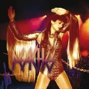

Music Reviews
-

Super Furry Animals Dark Days/Light Years
Fantastic music, horribly nauseating cover art - it's the Super Furry Animals!
Joe Rivers gets out the English-Welsh dictionary... -

Double Dagger More
Punk is not dead. But can it grow up?
Ryan Faughnder reviews... -

Various Artists Floored Memory... Fading Location
130701, ambitious post-classical FatCat imprint, releases a thirteen-track compilation doomed by the contrast between its four artists' musical manifestos.
Michael Skinnider reviews... -

Doves Kingdom Of Rust
The festival season is approaching, and Doves stake their claim for band of the summer with their fourth album, Kingdom of Rust.
Joe Rivers decides whether they deserve the title... -

Peaches I Feel Cream
Escort adventures, hermaphrodites, mullet jokes, and surgical sex enhancements - yep, must be time for another Peaches album.
Kevin Liedel takes the plunge... -
Röyksopp Junior
The Norwegian duo releases its third studio LP.
Nate Adams tries to explain why America hates Electronica... -
Death Cab For Cutie The Open Door EP
For those who enjoyed Narrow Stairs last year, this EP will help you savour it a little longer.
Cara Nash reviews... -

Crystal Antlers Tentacles
The Crystal Antlers' debut full length is a dizzy dance of eerily textured groove and wigged-out, propulsive cacophony, a gore-soaked yet emotionally potent slab of psych-punk from a group more interested in the finer degrees of turbulence than those of craft and clarity.
Tom Whalen references Beowulf, jumps the shark... -
Frightened Rabbit Liver! Lung! FR! (Live)
A middling live replication of their latest album, but why?
Brett Oronzio wonders... -
...And You Will Know Us By The Trail Of Dead The Century Of Self
While attempting to revisit and reexamine their roots for their sixth release, The Century Of Self, …And You Will Know Us By The Trail Of Dead records some pretty decent music. Unfortunately, they forget to play it back.
Sean Caldwell reviews...